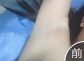
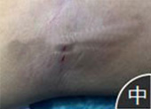
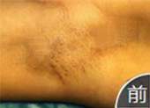
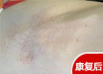

- 姓 名：刘萍性别：女
- 年 龄：19岁日期：2015.07.09
- 病 症：
遗传性腋臭
发病7年,曾进行外用药物治疗,无改善. - 治疗方案：德国威曼3D光纤消融术

术前
12岁开始有腋臭,中途有涂抹药物治疗,但效果不佳.

术中
采用德国威曼3D光纤消融术,并定制专属无疤康复方案。
术后
术后一个月,无疤痕遗留，无腋毛再生迹象。
- 姓 名：小梁性别：男
- 年 龄：27岁日期：2015.07.02
- 病 症：
重度腋臭
发病3年,30cm外气味较熏人，无治疗。 - 治疗方案：德国威曼3D光纤消融术

术前
异味浓重，病变大汗腺分布广且密.

术中
采用德国威曼3D光纤消融术，并定制相应治疗方案.

术后
术后2周,恢复良好，几乎不留疤痕,气味大有改善.
- 姓 名：瑶瑶性别：女
- 年 龄：20岁日期：2015.02.26
- 病 症：
狐臭再治疗患者
曾经在其他医院治疗失败，留下明显疤痕，且在次复发。 - 治疗方案：德国威曼3D光纤消融术

术前
腋下疤痕较明显,皮肤应长期药物涂抹呈轻微灰白.

术中
采用德国威曼3D光纤消融术，并定制相应治疗方案.

术后
术后半个月,不仅气味消失,原先的疤痕也被修复.
精确分析，对症治疗
Symptomatic treatment
| 分病型/TYPE | 分年龄/AGE | 分性别/GENDER |
| 青春期腋臭 | 16岁之前 | 男性腋臭 |
| 复发型腋臭 | 17-50岁 | 女性腋臭 |
| 重度型腋臭 | 50岁之后 | |
| 遗传性腋臭 |
四步消除腋臭，无痛不留痕
Painless not in evidence
-
麻醉
采用国际最新麻醉技术，由资深麻醉师进行麻醉，确保患者手术过程中无任何痛感.
-

超高清定向探测
手术全程在2100倍超高清可视设备辅助下，对皮下组织进行定向探测、准确定位，将病变大汗腺与正常组织实施精准分离.
-


超微开口
按照腋下皮肤纹理走向，仅开1-3mm米粒般大小切口，术后易恢复，不留疤，对上臂活动无任何影响.
-

消融、稀释、吸出
采用射频光波将病变大汗腺全面消融稀释，再使用德国进口的光纤针头将稀释汗腺全部吸出，达到彻底根治腋臭的目的.
好疗效用数据说话
治疗有效率100% 治愈率99.5%
好疗效，用数据说话！自2009年引进德国威曼3D光纤消融术以来，津门中医院截止目前已成功治愈腋臭患者高达数万例，治疗有效率100%，治愈率达99.5%（术后3年回访）.

感谢每一位康复明星，他们之所以能够勇敢说出自己的故事，是因为相信自己的分享能够为那些徘徊在康复门外的病友抹去疑虑，帮助他们选择一条通往康复的坦途。
好疗效用数据说话
治疗有效率100% 治愈率99.5%